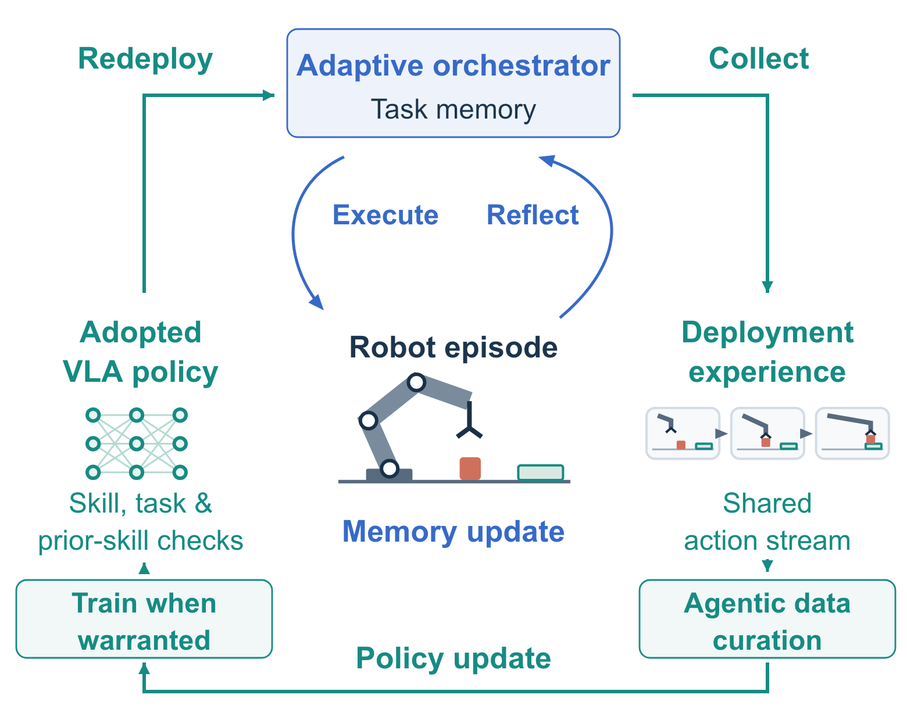
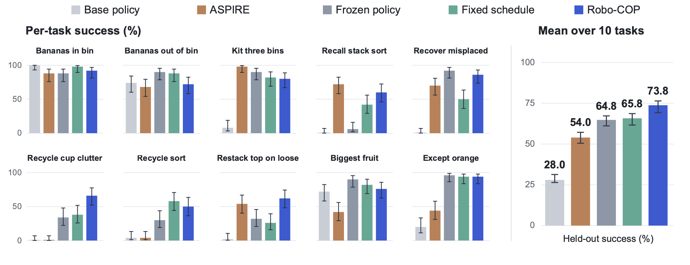

TASK 01 40 S
Pot and tape placement
Put both the pot and tape on the towel.
1 Stanford University 2 NVIDIA Research
How can a robot deploy zero-shot in a new environment
and learn while performing its task?
Vision-language-action (VLA) policies trained on large datasets are capable within their training domains, yet they still fail to generalize to the variety of situations a robot meets in real-world deployment. Agentic robot systems complement the policy with a vision-language model (VLM) orchestrator that learns when to call the policy, how to instruct it, and when to use scripted skills instead. However, because the harness is built around a frozen policy that has limited language steerability, the orchestrator can avoid the policy's failures but never overcome them. The policy becomes the bottleneck of the whole system. Fine-tuning the policy can remove this bottleneck, but updating it alone decouples it from an orchestrator tuned to its old behavior. We propose Robo-COP, in which the orchestrator and policy co-evolve during deployment. Robo-COP curates skill demonstrations from its own executions, fine-tunes the policy when this data can address recurring failures, and adopts each new policy only after it improves the skills it was trained for. Across ten simulated RoboLab tasks, Robo-COP raises mean held-out success from 64.8% to 73.8% over the same harness with a frozen policy, while fine-tuning on a fixed schedule without verification reaches only 65.8%. On three real-world tasks, Robo-COP raises held-out success from 38.3% to 50.0%. Robo-COP turns deployment into a self-improving flywheel in which robots learn by doing, with each improvement in execution producing better data for the next round of learning. Videos and code are available at https://xilunzhangrobo.github.io/robo-cop/.
Robo-COP updates both the VLA policy and the adaptive harness that orchestrates its use.
The harness logs policy and scripted actions as one stream, curates it into skill demonstrations, and verifies each new policy before adoption, revising the memory tied to the old one.
Method — paper Section 3 ↗
Recorded text and video judgments for three execution segments.
Play the segment to reveal the recorded video judgment.
Awaiting video review
Original judge outputs; example verdicts are not an independent assessment of judge accuracy. Source records.
Robo-COP reaches 73.8% mean held-out success, versus 64.8% for the frozen-policy baseline and 65.8% for the fixed schedule.

Select a stage to view the corresponding execution record.
Step 1 of 6. Select any component to inspect it.
Videos, generated programs, and controller decisions from a 100-trial deployment run.
Simulation / 100 trials
Training starts after trial 45; the adopted policy serves from trial 71.
23 / 45 completed
17 / 25 completed
26 / 30 completed
TRIAL 08 / 100
The generated program samples a grasp and uses scripted motions to move the bananas.
Task completed
Rolling success rate with every trial shown below. Choose a 10- or 20-trial window.
Phase success rates from one deployment run.
Real world / 60 seconds
On the 60-second task, the controller trains at trial 30, verification adopts the candidate, and held-out success doubles from 35% to 70%.
8 / 30 successful trials
4 / 10 successful trials
7 / 10 successes · Frozen: 5 / 10
Both methods share trials 1–30. The same rolling window is used for both curves.
30 curated episodes · 135 skill records
pick up the pot lid and put it on the grey towel
pick up the red tomato and put it on the white plate
pick up the green lime and put it on the white plate
The recorded verification returns CONFIRM. The adopted policy serves from trial 41.
Across all 50 deployment trials: Robo-COP 19/50 (38%); frozen-policy control 16/50 (32%).
Held-out evaluation. Across the three tasks, Robo-COP raises mean held-out success from 38.3% to 50.0%. Paper Section 4.3.
Cup recycling / Trial 72
The visual monitor reports that the cup is not secure. The harness writes another program to regrasp it and continues within the same episode.
Grasp check fails. The cup is not secured after the initial policy call.
Monitor stops the action. It requests revised code to close the gripper, verify the grasp, and lift.
Code is revised. The next program includes a grasp check and another attempt.
Task succeeds. The episode ends with the cup placed in the bin.
Successful and unsuccessful attempts on three real-world tasks.
Put both the pot and tape on the towel.
Set down the lid, then move the pot contents to the white plate.
Put the mustard in the bowl and the vegetables in the pots.
@article{zhang2026robocop,
title={Co-Evolving Robot Orchestrators and Policies through Deployment},
author={Zhang, Xilun and Wang, Maggie and Bauer, Erik and Yu, Hong-Xing
and Huang, Huang and Wu, Jiajun and Pavone, Marco},
journal={arXiv preprint arXiv:2610.09228},
year={2026},
url={https://arxiv.org/abs/2610.09228}
}